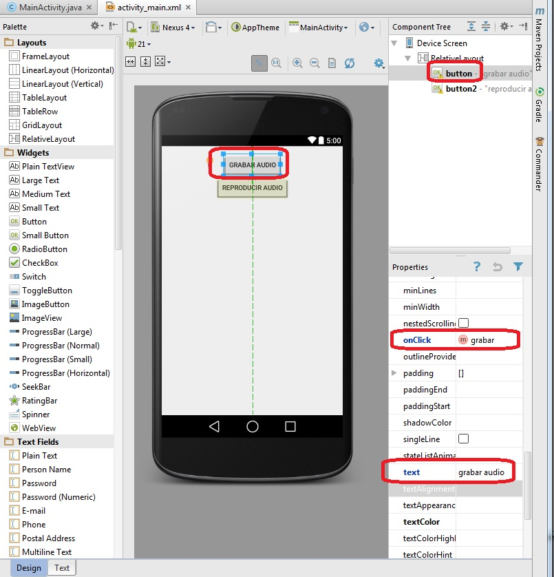

28 - Grabación de audio mediante el grabador provisto por Android (via Intent) |
La forma más sencilla de capturar audio en Android es mediante el grabador que provee el sistema operativo Android. Invocamos la aplicación de grabación y luego recuperamos el audio grabado.
Tiene como ventaja que la interfaz le es familiar al usuario, ya que muchas aplicaciones utilizan esta característica.
Disponer dos objetos de la clase Button con las etiquetas "grabar" y "reproducir". Cuando se presione el primer botón proceder a activar la grabadora provista por Android. Cuando se presione el segundo botón reproducir el audio grabado.
Crear un proyecto (Proyecto031) e implementar la interfaz, inicializar los eventos onClick de cada botón:
El código fuente es:
package ar.com.tutorialesya.proyecto031;
import android.content.Intent;
import android.media.MediaPlayer;
import android.net.Uri;
import android.provider.MediaStore;
import android.support.v7.app.ActionBarActivity;
import android.os.Bundle;
import android.view.Menu;
import android.view.MenuItem;
import android.view.View;
public class MainActivity extends ActionBarActivity {
int peticion = 1;
Uri url1;
@Override
protected void onCreate(Bundle savedInstanceState) {
super.onCreate(savedInstanceState);
setContentView(R.layout.activity_main);
}
@Override
public boolean onCreateOptionsMenu(Menu menu) {
// Inflate the menu; this adds items to the action bar if it is present.
getMenuInflater().inflate(R.menu.menu_main, menu);
return true;
}
@Override
public boolean onOptionsItemSelected(MenuItem item) {
// Handle action bar item clicks here. The action bar will
// automatically handle clicks on the Home/Up button, so long
// as you specify a parent activity in AndroidManifest.xml.
int id = item.getItemId();
//noinspection SimplifiableIfStatement
if (id == R.id.action_settings) {
return true;
}
return super.onOptionsItemSelected(item);
}
public void grabar(View v) {
Intent intent = new Intent(MediaStore.Audio.Media.RECORD_SOUND_ACTION);
startActivityForResult(intent, peticion);
}
public void reproducir(View v) {
MediaPlayer mediaPlayer = MediaPlayer.create(this, url1);
mediaPlayer.start();
}
protected void onActivityResult(int requestCode, int resultCode, Intent data) {
if (resultCode == RESULT_OK && requestCode == peticion) {
url1 = data.getData();
}
}
}
Cuando se presiona el botón de grabar el audio mediante un Intent activamos la aplicación de grabación propia de Android.
Seguidamente llamamos al método startActivityForResult para poder recuperar la grabación luego de finalizada a través del método onActivityResult:
public void grabar(View v) {
Intent intent = new Intent(MediaStore.Audio.Media.RECORD_SOUND_ACTION);
startActivityForResult(intent, peticion);
}
Debemos pasar al método startActivityForResult además de la referencia del Intent una variable con un valor 0 o positivo (luego este valor retornará al método onActivityResult)
Cuando finalizamos la grabación se ejecuta el método onActivityResult, donde almacenamos en la variable url1 la referencia al archivo de audio creado:
protected void onActivityResult (int requestCode, int resultCode, Intent data) {
if (resultCode == RESULT_OK && requestCode == peticion) {
url1 = data.getData();
}
}
Por último para ejecutar el contenido de la grabación utilizamos la clase ya vista MediaPlayer:
public void reproducir(View v) {
MediaPlayer mediaPlayer = MediaPlayer.create(this, url1);
mediaPlayer.start();
}
Este proyecto lo puede descargar en un zip desde este enlace:
proyecto031.zip